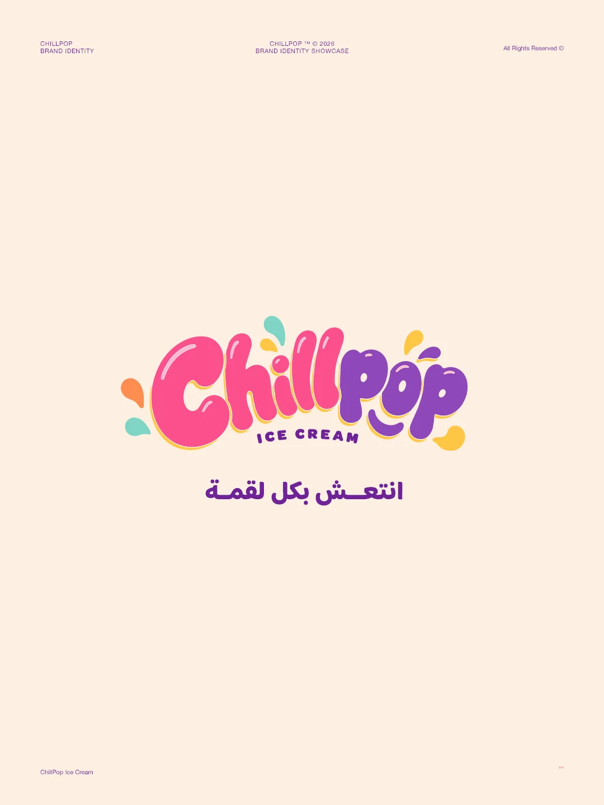
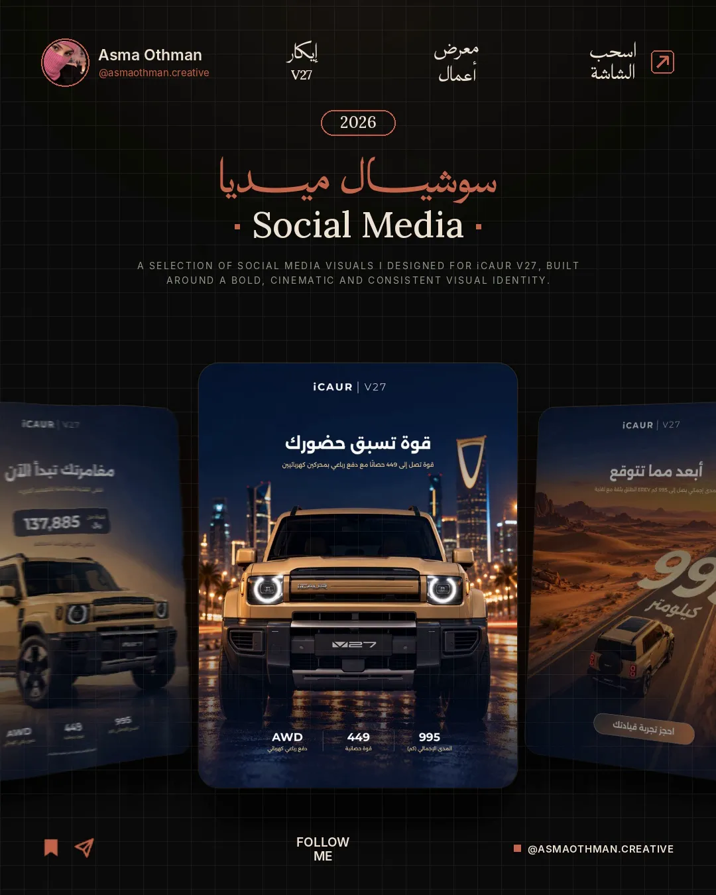
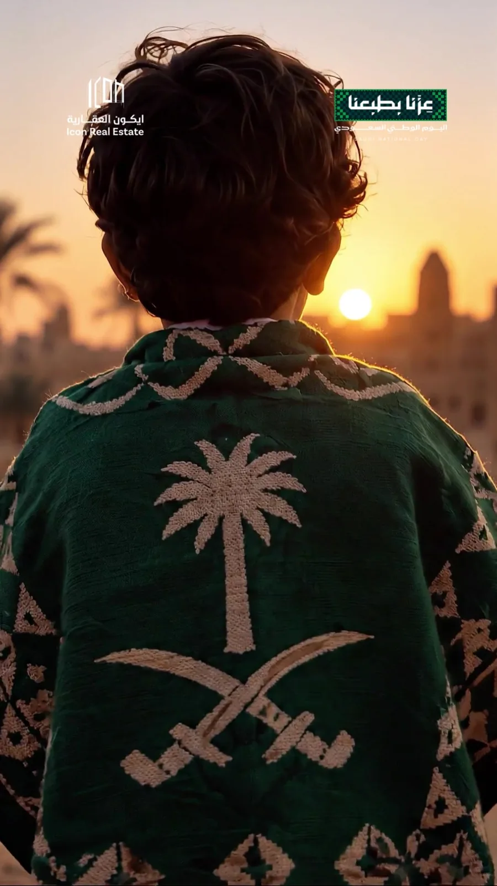

Portfolio · 2019—2026 · Jeddah, Saudi Arabia
Asma Othman
أسماء عثمان
Art Director · Senior Graphic Designer
I develop ideas into clear visual directions, brand identities and campaigns—from concept through execution.
From the idea and creative direction to execution and motion. Seven years designing for brands across Saudi Arabia, the Gulf, Egypt and Turkey.
Services
- 01
Art Direction
الإدارة الفنية
- 02
Brand Identity & Visual Systems
الهوية البصرية وأنظمتها
- 03
Advertising & Marketing Campaigns
الحملات الإعلانية والتسويقية
- 04
Cross-platform Design: social, print, digital & packaging
التصميم عبر المنصات: سوشيال، مطبوعات، رقمي وتغليف
- UI/UX Design
- AI-Assisted Design
- Motion & Video Editing
Higgsfield AI: scene generation, image-to-video, cinematic camera moves & motion control
- ChatGPT
- Higgsfield AI
- Adobe Firefly
- Midjourney
- Microsoft Copilot
- Canva AI
Selected work
ICON Real Estate
Icon Real Estate, Jeddah

Safari
Self-initiated concept

Rashf
Self-initiated concept

ChillPop
Self-initiated concept

Zeina
Self-initiated concept

CareDrive
CareDrive

iCAUR V27
Self-initiated concept

AI Creator · Saudi National Day Film
Self-initiated concept
Motion & Editing
View all projectsReels, launch films and edited showcases, designed, animated and cut in After Effects and Premiere Pro.
Icon Real Estate
AI Creator · Saudi National Day Film
Icon Real Estate
ICON 18 montage: from render to reality
Icon Real Estate
ICON 18 project reel
Icon Real Estate
7 reasons to choose ICON 18
Icon Real Estate
30-second ad
Icon Real Estate
ICON 19 unit types
Icon Real Estate
Not every home is a choice
Icon Real Estate
Saudi National Day
Icon Real Estate
New project teaser
Brands I’ve Designed
ICON Real Estate, Safari, Rashf, CareDrive, Zeina, Visory, ChillPop, iCAUR, Dallah Sukkar, Wasabi, 925 Club, Piattino Café, Synexcell, YZDAD, Gate A, Koki's Beauty, Bassem El-Bahkery, Dating Boat, Awen, Brown House, Khawalid, Venue Hotel
About
I design brand identities, advertising and social campaigns, print, and motion for companies across Saudi Arabia and the Gulf. My work starts with the brief and the audience, and only then with the visuals.
Good design is not just seen. It is felt.More about me
All projects
- ICON Real Estate — Real Estate Marketing. Art direction for a Saudi real estate developer. I built ICON's social media from the ground up and set one visual idea for every project: show each building at dusk, when it looks most like a home worth owning, in night blue, warm light and gold type. That one system now runs across posts, stories, reels, print and sales material, from ICON 18 to ICON 21.
- Safari — Brand Identity. A Saudi specialty coffee brand built on one idea: the journey. Every cup is the end of a long road, so a dune-and-sun symbol and the tagline “a taste worth the journey” tell the same story. I kept one simple symbol for small items and a dune pattern for large surfaces, then carried the system through a brand book, cups, coffee bags, shopping bags, signage and a drive-through scene.
- Rashf — Brand Identity. A contemporary Arabic café identity built on one idea: a modern coffee experience with an authentic Arabic spirit. Coffee brown with a lively orange keeps it warm and energetic, and an Arabic logotype gives the mark its character while the Latin type stays simple. The system runs from the logo to cups in three sizes, coffee and paper bags, stickers, a donut box, the storefront and social media.
- ChillPop — Brand Identity. An ice cream brand built on “refresh with every bite”: a glossy, bubbly wordmark that looks like it is melting with colour. Candy pink and grape purple with drops of flavour make it feel fun and generous at first glance, in Arabic and English. I applied it to cups, a family tub, takeaway cups, stickers, an apron and the storefront, and presented it as a 9-slide Instagram showcase.
- Zeina — Brand Identity. A jewellery identity built on one idea: every piece should feel like a gift. A soft, flower-like symbol drawn from interlocking curves, like links in a chain, sits with a light wordmark in coral, blush and pearl tones. In jewellery the packaging is part of the product, so the mark was refined for tags and ring boxes and applied across boxes, cards and swing tags, with gold foil for the premium line.
- CareDrive — Brand Identity. A logo for a child transportation platform, built on the idea that parents look for reassurance, not transport. The C and D form one mark: the outer shapes make a protective enclosure around a central circle, the child. Simple circles and balanced curves keep it clear at every size, tested on an app icon, business cards, letterhead, ID badges and vehicle branding.
- Visory — Brand Identity. A brand guideline for Visory, a visual production brand: “Where Vision Becomes Story”. The mark merges a V with a play button, so the name and the act of telling stories through video become one shape. A bold orange palette keeps it energetic, and the guideline sets construction, colour, type and applications on equipment, backdrops and merchandise.
- Wasabi — Editorial & Print. A sushi restaurant identity built on one symbol: chopsticks lifting a red sun, saying Japan, food and freshness at once. A restaurant brand is read in the hand, so the menu leads the system, with clear sections in deep green and wasabi green. It extends to business cards, chopstick sleeves, cups, bags and takeaway boxes.
- Piattino Café — Brand Identity. A café identity led by a character. Piattino is Italian for the small plate a coffee cup sits on, so the mascot, a smiling waiter, offers that cup to you. A character gives a small café a personality that is easy to remember, and it carries across cups, bags and carriers with an orange brush ring, teal and mint, and a hand-lettered wordmark.
- 925 Club — Brand Identity. A sporty identity for 925 Club under the line “Together, we thrive from 9 to 5”. The numbers 9, 2 and 5 interlock into one mark with a hand-written “Club” for a human touch, in royal blue and lime green that stay recognisable on fabric. It is applied to t-shirts, jackets, bags, bottles, cups, caps and gym imagery.
- iCAUR V27 — Social Media Design. A social campaign for the iCAUR V27 SUV built as one journey: open desert, mountain road, canyon at sunset, a desert highway and Riyadh at night. Each post is a scene with a short Arabic line, while the key specs and the “book a test drive” button sit in the same place every time, so six posts read as one campaign.
- Dallah Sukkar — Social Media Design. A social media campaign for a Saudi dessert brand, built on hospitality. Short, conversational Arabic lines sit against honey, dates, Arabic coffee and the dallah, and product hero shots alternate with people sharing the desserts, so the feed sells both the product and the moment. Warm beige light and a consistent call-to-action pill tie nine posts together.
- AI Creator · Saudi National Day Film — AI Video Creation. A 46-second Saudi National Day film for Icon Real Estate, from roots to skyline: the values Saudis grow up with pass from an elder to a boy, who ends by looking over a modern city. The brand stays light so people share it as a greeting. I wrote the concept and a 14-scene storyboard, then generated and directed every shot with AI on Higgsfield and edited the final film.
- Motion & Editing — Motion & Video Editing. All my motion and video work in one place: reels, montages and ads for Icon Real Estate. Real footage of the buildings is cut with animated plans, sizes and features in the brand's navy and gold, so buyers see the projects, the unit types and the brand between launches, from ICON 18 to ICON 19 and new projects.
- Government Infographics — Editorial & Print. Infographics on digital transformation, the entertainment sector, NEOM and the Saudi Green Initiative. Each poster leads with one big idea, then breaks the figures into short, scannable blocks, because a clear hierarchy matters more than decoration. Every figure was checked against its source text.
- Logo Collection — Brand Identity. A selection of self-initiated logos for different industries: hospitality, beauty, mobility, marketing and more. Each mark is built on one idea, a symbol or letterform that captures the brand's purpose and still works at small sizes, and is shown in one colour on black so the drawing speaks for itself.